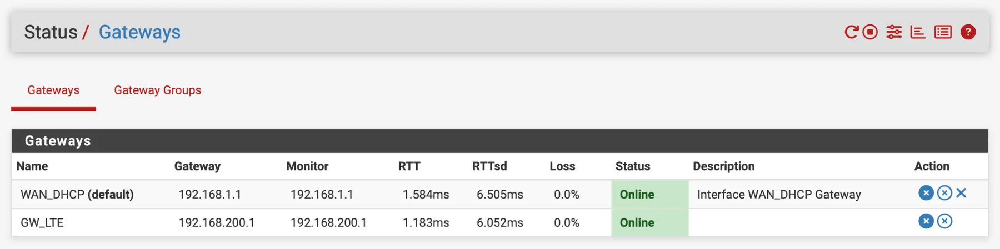
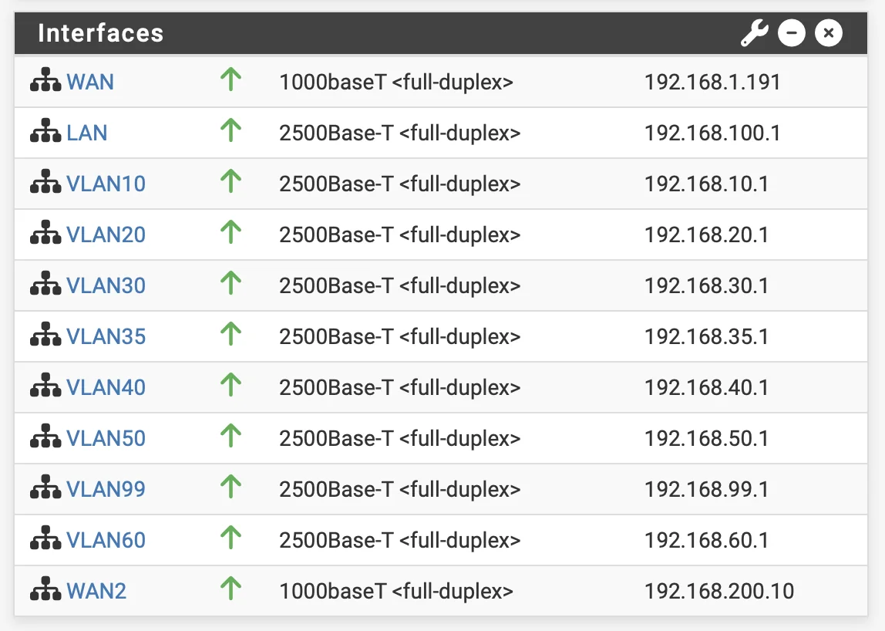
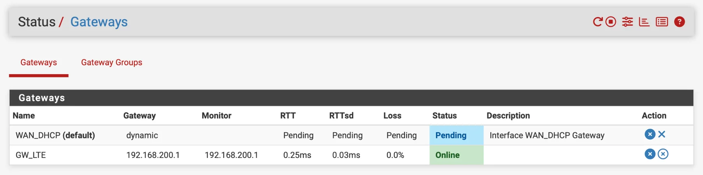
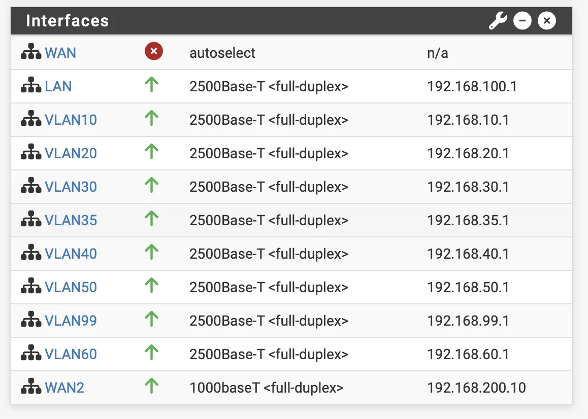

1. O que é o pfSense?
O pfSense é uma distribuição de software de firewall e encaminhamento baseada em FreeBSD. Pode ser instalada num computador x86-64 compatível ou utilizada em equipamento dedicado e permite controlar as comunicações entre a Internet e as redes internas através de uma interface de administração Web.
Reúne firewall com inspeção de estado, router IPv4/IPv6, NAT, DHCP, resolução de DNS, VLANs, VPN e gestão de várias ligações WAN. Funcionalidades como deteção e prevenção de intrusões (IDS/IPS) ou filtragem adicional podem ser acrescentadas através de pacotes compatíveis.
Referência: documentação oficial da Netgate.
2. O que é uma firewall?
Uma firewall verifica o tráfego que tenta atravessar uma fronteira de rede e aplica regras de segurança. Por exemplo, pode permitir ligações HTTPS iniciadas por computadores internos, impedir ligações não autorizadas vindas da Internet, restringir SSH a uma rede de gestão e limitar a comunicação entre VLANs.
O pfSense usa por norma Stateful Packet Inspection (SPI): quando uma nova ligação é permitida, a firewall guarda informação sobre o seu estado para autorizar as respostas associadas, sem precisar de uma regra independente para cada pacote de retorno.
3. Como funciona uma firewall?
Exemplo simplificado de um PC que pretende abrir uma página HTTPS. A decisão depende das regras aplicadas à interface pela qual o pacote entra; o encaminhamento e o NAT são etapas relacionadas, mas distintas.
Este esquema é didático: no funcionamento real também intervêm interfaces, rotas, estados, políticas de encaminhamento e configurações NAT.
4. Arquitetura de uma rede com pfSense
Num cenário doméstico ou escolar, o pfSense funciona entre a ligação à Internet e os equipamentos internos. No nosso laboratório há também uma segunda WAN, via LTE.
Diagrama lógico simplificado. As VLANs e equipamentos adicionais da instalação são detalhados no artigo Redes e VLANs.
5. O que podemos fazer com o pfSense?
| Funcionalidade | Disponibilidade |
|---|---|
| Firewall Stateful, router e NAT | Integrados |
| Servidor DHCP e DNS Resolver | Integrados |
| VLANs e múltiplas ligações WAN | Integradas |
| VPN (IPsec, OpenVPN; WireGuard quando disponível) | Suporte integrado ou componente/pacote, conforme a versão |
| IDS/IPS com Suricata ou Snort | Pacotes opcionais |
| pfBlockerNG | Pacote opcional |
6. Requisitos de hardware
Para um laboratório pequeno, um mini PC x86-64 com interfaces Ethernet fiáveis, armazenamento SSD e memória suficiente para os serviços ativados é uma escolha prática. O desempenho depende da velocidade da Internet, do número de regras, das VPNs e dos pacotes instalados.
Equipamento utilizado neste laboratório
O router/firewall do laboratório é um mini PC dedicado com Intel Pentium 4417U a 2,30 GHz (2 núcleos, 4 threads), quatro interfaces de rede, 8 GB de RAM e armazenamento NVMe. A identificação do processador e os dados de firmware foram confirmados no painel System Information do pfSense, em 23 de novembro de 2026.
- Processador: Intel Pentium 4417U @ 2,30 GHz; 2 núcleos físicos e 4 threads (4 CPUs lógicas).
- Aceleração criptográfica: AES-NI disponível no processador, assinalado como inativo na leitura; QAT não disponível.
- BIOS/UEFI: AMI Corp., versão 5.12, datada de 12/09/2025; arranque em modo UEFI.
- Sistema instalado: pfSense 2.9.0-RELEASE (amd64). O painel reportou FreeBSD 16.0-CURRENT.
- Atualizações: em 23/11/2026, o painel indicava a versão 2.9.2 como disponível. A atualização não é apresentada como realizada.
Nota de segurança: os identificadores internos do equipamento e as credenciais/identificadores de acesso administrativo foram omitidos nesta versão pública. Os requisitos de hardware recomendados devem ser confirmados na documentação oficial da Netgate antes de uma instalação nova.
7. Instalação
- Confirmar a compatibilidade do hardware e descarregar o instalador da edição pretendida através da Netgate.
- Preparar um dispositivo USB de arranque e iniciar o mini PC a partir dele.
- Seguir o assistente de instalação, escolher o disco de destino e reiniciar.
- Identificar as interfaces físicas e atribuir corretamente WAN e LAN na consola.
- Ligar um computador à LAN e abrir a interface Web para concluir a configuração inicial.
Procedimento genérico de referência, não um registo passo a passo da instalação realizada neste equipamento. Os ecrãs e opções variam entre edições e versões.
8. Configuração inicial: WAN e LAN
| Interface | Função |
|---|---|
| WAN | Ligação externa principal (fibra) |
| WAN2 | Ligação externa de reserva (LTE) |
| LAN e VLANs | Dispositivos internos, com políticas distintas por rede |
Uma WAN liga o router/firewall ao acesso externo; uma LAN reúne os equipamentos internos. Numa instalação inicial típica, o pfSense permite tráfego iniciado pela LAN e bloqueia novas ligações não solicitadas pela WAN, salvo regras explícitas. É necessário rever as regras ao adicionar VLANs e outras interfaces.
9. Regras de firewall
Em Firewall → Rules, as regras são normalmente avaliadas na interface por onde o tráfego entra. Uma boa prática é permitir só o necessário entre redes, identificar a origem, destino, protocolo e porta e documentar o motivo de cada exceção.
Exemplo didático: uma VLAN de convidados pode ter acesso à Internet e não ter acesso direto à rede de gestão. A regra exata depende das VLANs, aliases e serviços existentes.
10. NAT
O Network Address Translation (NAT) permite, por exemplo, que vários dispositivos com IP privado partilhem o endereço IPv4 público da WAN para aceder à Internet. NAT e regras de firewall não são a mesma coisa: traduzir um endereço não implica automaticamente autorizar qualquer tráfego.
No cenário com duas WANs, é necessário verificar o Outbound NAT para que a saída pela ligação LTE seja igualmente contemplada.
11. DHCP
O DHCP atribui automaticamente endereços IP, máscara, gateway e outras opções aos clientes. Pode ser configurado por interface ou VLAN, evitando misturar endereços de redes diferentes. O laboratório também utiliza serviços DNS próprios, pelo que não devemos assumir que todos os segmentos recebem o pfSense como DNS.
12. DNS
O DNS Resolver do pfSense resolve nomes de domínio e pode disponibilizar respostas para clientes internos. É diferente do DHCP: o DHCP entrega configurações de rede; o DNS converte nomes em endereços. Neste laboratório também existe AdGuard Home, pelo que o percurso real das consultas depende das opções DHCP e dos servidores DNS definidos em cada VLAN.
13. VPN
As VPN criam canais protegidos para acesso remoto ou comunicação entre redes. O pfSense suporta tecnologias como IPsec e OpenVPN e, dependendo da instalação, WireGuard. O laboratório também utiliza Tailscale para acesso remoto; não é correto presumir que todo esse tráfego termine diretamente num servidor VPN do pfSense. Consulta o artigo Acesso remoto com Tailscale.
14. VLANs
As VLANs separam logicamente equipamentos sobre a mesma infraestrutura física. No laboratório, exemplos são a VLAN 10 (acesso), 20 (NAS), 30 (IoT), 35 (convidados), 40 (servidores), 50 (câmaras), 60 (impressoras) e 99 (gestão). O switch transporta as VLANs e o pfSense aplica as regras de comunicação e encaminhamento entre elas.
Nem todas as VLANs devem comunicar livremente umas com as outras. A segmentação só é eficaz com regras adequadas. Ver topologia e VLANs da rede.
15. Boas práticas e resolução de problemas
- Guardar cópias de segurança da configuração antes de alterações importantes.
- Administrar a firewall apenas a partir de redes autorizadas.
- Verificar os logs quando uma ligação é bloqueada e evitar regras demasiado abrangentes.
- Confirmar DNS, gateways e NAT quando a Internet deixa de funcionar, mesmo que a interface WAN apareça como ativa.
- Testar a recuperação após falha da fibra e validar a saída efetiva pela WAN2, não apenas o estado «Online» do gateway.
- Manter as atualizações e os pacotes opcionais sob controlo.
Checklist de diagnóstico
1. A interface está ligada? 2. O gateway responde? 3. O DNS resolve nomes? 4. A regra permite o tráfego? 5. O NAT cobre a WAN utilizada? 6. O log mostra bloqueios?
16. A nossa instalação: fibra, LTE e failover
As secções seguintes preservam as capturas reais do pfSense, os estados observados dos gateways e o comportamento documentado do laboratório. Ao contrário dos exemplos anteriores, estas observações dizem respeito à instalação efetivamente utilizada.
WAN, gateway e failover no laboratório
Ligação a uma rede externa, neste caso o acesso principal por fibra.
Segunda ligação externa, neste caso o acesso de reserva através do MikroTik LTE.
Próximo equipamento por onde o tráfego segue para outra rede.
Comutação para uma ligação alternativa quando a principal deixa de estar disponível.
O gateway group e as regras de encaminhamento permitem definir a prioridade entre ligações. As capturas mostram os estados dos gateways e das interfaces; a comutação efetiva do tráfego depende também das regras configuradas.
Fibra e LTE: os dois estados
O objetivo do failover é manter a conectividade dos serviços quando a ligação de fibra deixa de estar disponível. Os dois cenários abaixo seguem a mesma ordem: estado, encaminhamento, notas e capturas do pfSense.
Estado normal
Em funcionamento normal, a ligação principal de fibra está ativa e a ligação LTE permanece disponível como alternativa. As capturas seguintes mostram os gateways online e as interfaces internas operacionais.


Falha da fibra
Quando a fibra deixa de responder, o pfSense deteta a alteração no gateway principal e a ligação LTE assume a saída para a internet. Assim, a rede interna mantém-se ativa e os serviços continuam com conectividade externa pela ligação de reserva.


O que acontece quando a fibra falha?
Com a fibra operacional, a rede utiliza a ligação principal para sair para a internet e mantém o LTE disponível como reserva. Quando a fibra falha, o encaminhamento configurado no pfSense passa a utilizar a WAN2/LTE, permitindo a continuidade dos serviços com acesso à internet.
- A ligação de fibra deixa de estar disponível e a monitorização do gateway principal deixa de obter as respostas esperadas.
- O pfSense identifica a alteração de estado do gateway principal.
- Com o encaminhamento e as prioridades de failover devidamente configurados, a WAN2/LTE passa a ser a saída para a internet.
- Quando a fibra regressa e o gateway é considerado novamente disponível, o tráfego pode voltar à ligação principal conforme as regras e estados de ligação.
As capturas comprovam o estado das interfaces e gateways nos dois momentos. O caminho efetivo de cada ligação depende das regras de routing e NAT; a disponibilidade do LTE não prova, por si só, que todos os fluxos mudaram de rota.
O que continua a funcionar?
Os serviços e a comunicação local entre as VLANs continuam a depender da infraestrutura interna, e não da fibra.
Com a comutação bem-sucedida, os serviços com tráfego de saída podem utilizar o LTE, dentro das suas limitações.
Pode depender do tipo de acesso utilizado e das limitações do operador móvel; não é garantido para todos os serviços.